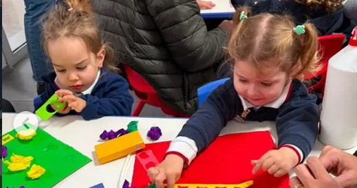
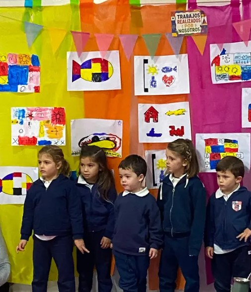
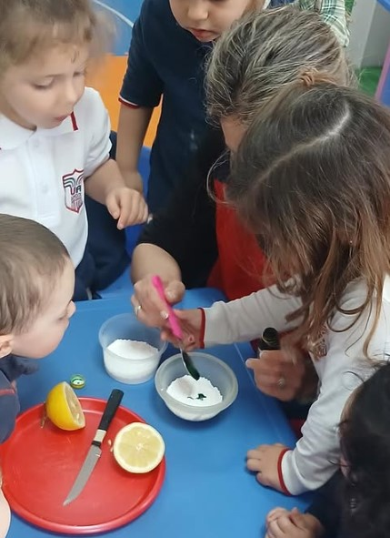

Música
La música favorece la expresión, la sensibilidad, la escucha, la creatividad y el disfrute compartido desde edades tempranas.

Los primeros años son una etapa fundamental. Acompañamos a cada niño en un entorno seguro, estimulante y cercano, promoviendo la curiosidad, la autonomía, la creatividad y el placer por aprender.
En Uruguayan American School de Mercedes entendemos que aprender en los primeros años significa explorar, jugar, preguntar, experimentar y comenzar a descubrir el mundo.
Nuestra propuesta de Early Years acompaña a cada niño respetando sus tiempos, intereses y necesidades, integrando el desarrollo académico, emocional, social, lingüístico y corporal.
Aprender desde pequeños para crecer con confianzaAcompañamos cada etapa del desarrollo con propuestas pensadas especialmente para las necesidades, intereses y posibilidades de cada edad.

El aprendizaje durante los primeros años va mucho más allá de los contenidos académicos.
Nuestra propuesta en español busca favorecer el desarrollo del lenguaje, el pensamiento, la curiosidad y la capacidad de expresarse y comunicarse.
A través del juego, la literatura, la exploración, las experiencias científicas, el arte y diferentes situaciones de aprendizaje, los niños comienzan a construir conocimientos y a desarrollar herramientas fundamentales para su trayectoria escolar.
Buscamos que cada niño tenga un rol activo en su aprendizaje: que pueda preguntar, descubrir, crear, resolver situaciones y aprender junto a otros.
El inglés forma parte de la experiencia educativa desde los primeros años y en todos los niveles de Early Years.
Creemos que el contacto temprano y sostenido con una segunda lengua permite que los niños se familiaricen con ella de una manera espontánea, natural y significativa.
El idioma se incorpora a través de canciones, juegos, cuentos, rutinas, conversaciones y diferentes experiencias especialmente pensadas para cada edad.
Inglés integrado dentro del horario de la mañana, formando parte de la experiencia cotidiana de los niños.
La propuesta se amplía con inglés a contraturno, durante la tarde, aumentando progresivamente la exposición al idioma.
Nuestro objetivo no es solamente que los niños aprendan inglés, sino que desarrollen desde pequeños la confianza necesaria para comprenderlo, utilizarlo y comunicarse naturalmente en una segunda lengua.
En todos los niveles de Early Years, la propuesta académica se complementa con experiencias que favorecen distintas formas de aprendizaje y expresión.
La música favorece la expresión, la sensibilidad, la escucha, la creatividad y el disfrute compartido desde edades tempranas.
A través del movimiento, el juego y la actividad corporal, los niños desarrollan coordinación, confianza, autonomía y vínculos con los demás.
El trabajo psicomotriz acompaña el desarrollo corporal, emocional y cognitivo, fortaleciendo la relación del niño consigo mismo, con los otros y con su entorno.
El desarrollo infantil comprende múltiples dimensiones. Por eso, en Early Years contamos con el acompañamiento de un equipo multidisciplinario que trabaja junto a docentes y familias.
Esta mirada integral nos permite acompañar los procesos de aprendizaje y desarrollo respetando las particularidades de cada niño y favoreciendo una intervención temprana cuando resulta necesaria.
El trabajo conjunto entre docentes, especialistas y familias constituye una parte esencial de nuestra manera de entender la educación.

Para los niños de Toddlers, Nursery y Kinder 3, ofrecemos además nuestra propuesta de Leisure Time durante el horario de la tarde.
Es un espacio pensado para continuar disfrutando de la escuela desde una dinámica diferente, con actividades de arte, creatividad y expresión especialmente adaptadas a las edades de los niños.
Un tiempo para crear, compartir, experimentar y disfrutar, acompañando el desarrollo de nuevas formas de expresión y fortaleciendo la confianza y la autonomía.
En Early Years buscamos que cada niño encuentre en la escuela un lugar donde sentirse seguro, acompañado y valorado; donde pueda desarrollar su curiosidad, descubrir sus capacidades y disfrutar del aprendizaje.
Porque las experiencias de los primeros años construyen mucho más que conocimientos: construyen las bases para aprender, comunicarse, relacionarse y crecer.